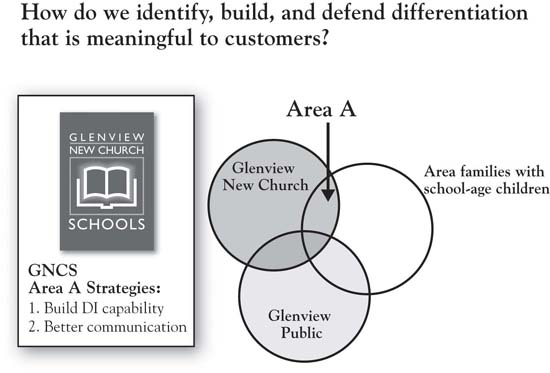
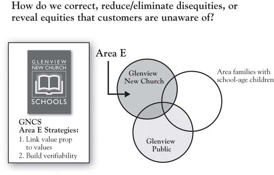

The most significant contribution of the 3-Circle model is the guidance on growth strategy that falls relatively easily out of an effective customer analysis. We will use the GNCS example to quickly illustrate this. First, recall our basic definition of customer value:
As noted, this ratio is important in suggesting that the firm increases the chance that the potential customer will choose their brand when they either increase the numerator relative to the competition or reduce the denominator. Apple and Dell represent polar opposites in terms of competitive positions—Apple differentiated around excellent design and functionality (with margin driving its profitability) and Dell focused more on efficiency, low-cost basis, and aggressive pricing (with high volume driving its profitability). In some ways—and with certain exceptions—we might refer to Apple as a numerator company and Dell as a denominator company. Each creates significant value for its customers but in very different ways.
As a self-funded private school, GNCS does charge tuition. It gives regular parishioners a discount from the stated tuition level. For the purposes of our discussion here, we will not introduce a tuition cut into the mix for GNCS. However, it is important to note that price reduction—when financially well reasoned—is a plausible alternative here, particularly if it is accompanied by cost reductions.
We will organize the consideration of growth strategies around four questions. Although we will later see that there are additional growth strategy implications that emerge from the model, these four questions are most fundamental.
The 3-Circle model makes a fundamental premise of competitive strategy very plain: The firm must be different from competitors in ways that matter to customers. One of the most valuable aspects of the model is the manager’s ability to teach colleagues and staff this notion. But beyond just conveying understanding of the notion that all firms must have points of difference to grow there are important implications in (a) first discovering our points of difference from the customer’s perspective (often, they are not what we expect) and then (b) thinking through how we can build and defend them. In a subsequent chapter, we will detail the bases for differentiation and the variety of ways that firms attack this important element of strategy. For the GNCS example, growth question 1 is summarized in Figure 2.10 "Growth Question 1".
Although relatively new, GNCS does have a differential advantage over the public schools in its small size, caring environment, and potential for individualized attention to children. These are natural advantages, but the team at GNCS decided that they could be leveraged in two ways. These two secondary questions form a foundation for growth strategy in each of the general categories we will discuss:
Figure 2.10 Growth Question 1
Figure 2.11 "Growth Question 2" identifies a series of questions about Area E, which we only summarize here and save for greater depth later. In some ways, this is even a higher short-term priority than building Area A. Very often in this analysis, firms find that customers raise concerns that they were not aware of, and find that these concerns are sometimes based on misconceptions. Again, GNCS discovered a general lack of awareness of the school’s value proposition. The clear growth strategy emerging from this is conducting an audit of all communications media and touchpoints, as well as all opportunities to clearly convey the school’s mission and, again, how it connects to the Area G values identified. Probably the most significant disequity defined for GNCS was the fact that they lacked the test scores that would provide credible evidence of both the school’s academic excellence and the teaching staff’s credentials, the former because the school had not undertaken the standardized tests and the latter because they had never thought to communicate teacher credentials. In their analysis, GNCS discovered the importance of building a capability in standardized testing and in very clearly promoting their teachers’ advanced degrees.
Figure 2.11 Growth Question 2
In Area C reside the competitors’ strengths. Growth for our firm may be produced by offsetting or neutralizing these (Figure 2.12 "Growth Question 3"). One can see the complementary relationship between Areas C and E here—the competitor’s advantages (Area C) may, at times, be seen as the firm’s disequities (Area E). The issue of whether or not the firm should vigorously attack Area C depends—to what degree do we have, or can we build, a credible attack on the competitor? What are the costs of, and returns from, such an attack? In the case of GNCS, neutralizing the public school’s advantage on verifiability (i.e., building the standardized testing capability) is straightforward. This is essentially a competitive requirement today, because test scores are data that families expect each school to be able to produce (i.e., it has essentially become a point of parity). In addition, the costs of building this capability are reasonable, particularly compared to the costs of not doing it. As noted, though, the firm needs to be discriminating about which Area C dimensions to attack. Given resource constraints and a more focused mission, it would not make sense for GNCS to seek to broaden its curriculum to match the curriculum breadth of GPSD, for example.
A related growth strategy question that falls roughly into the category of growth question 3 is the question of whether or not to attack or leverage the competitor’s disequities (Area F). To the extent that such deficiencies are strategically important (i.e., associated or potentially associated with customer value), these dimensions represent an opportunity to directly attack the competition to take away customers. Overcoming deficiencies involves making better products or services than the competition and distributing them more effectively. In addition, communications strategy can point out the problems with the competitor’s offerings. Research on comparative advertising suggests that a direct attack on a smaller competitor is generally a bad idea for a market leader. But the fact that it may work for an underdog is reflected in Apple’s brilliant “Get a Mac” campaign, which cleverly and effectively positioned Microsoft as an overconfident (if insecure), bumbling nerd of a competitor.
Figure 2.12 Growth Question 3

Customers’ needs are never fully met. There are always problems somewhere in the customer’s consumption chain for which alternative solutions might be developed that could serve to ultimately build Area A. This includes both functional value (e.g., suitcases with wheels and golf bags with stand-up legs are only recent inventions in a long history of travel and golf), and deeper psychological or social value (e.g., helping parents feel more confident about the chances for their children’s future success). To illustrate, consider the human value “control.” Deep-seated and highly influential in guiding our behavior, the desire for control is what is called an instrumental valueValue as a means to another end or value.. That means that it is an intermediary of a value—that is, it helps lead to other terminal values like peace of mind or security.Wilkie (1994). But the overriding point is straightforward: We value feeling in control. In general, humans like to feel a sense of certainty and predictability. Through evolution, this has just been hardwired into our systems. When companies can help us feel more in control, there is value there that is worth paying for. Thinking about the values (control), as opposed to product features and attributes, tends to open up thinking about potential solutions for customers. It is easy to find examples of new innovations that connect with customers because they touch our sense of control:
We will expand our discussion of values in Chapter 4 "The Meaning of Value", but, for now, we point out that the exploration of Area G for growth opportunities requires going beyond the current conception of the product or service. It requires a way of exploring customers’ deeper problems, needs, and motives.
At the chapter’s opening, we discussed Booklet Binding, Inc. (BBI), the firm competing in the market for printed booklets that had become commoditized. After deeper study of customers’ purchasing patterns and needs, the company turned itself around by listening more carefully to individual customer needs and by expanding the definition of its product. It found that customers would significantly benefit from sales programs that anticipated their promotion schedules over time, reminded them of previous orders, and helped them plan ahead. It also found that they could create value for customers through education on topics that helped customers improve their efficiency and sales effectiveness. These efforts not only enhanced customers’ sense of control over at least one aspect of their business, it also helped BBI customers create more value for their customers. This required redefining what BBI considered to be its core product and service capabilities, but in doing so, the company was able to recapture a substantial part of the market and to improve profitability.
Regarding GNCS, we have already made some mention of the values that Pastor Buss uncovered in Area G. Given this depth of understanding of the values driving family school choice, the GNCS team should evaluate all existing programs in terms of how well they deliver upon these values (see Figure 2.12 "Growth Question 3"). Subsequently, the team should strive to build the programs that most directly address these values and perhaps eliminate programs that do not. So an after-school program that can be understood to have the benefits of preparing primary school students for middle school is likely to have a greater impact than one that has a more general positioning. New programs might be built specifically around the life skills that contribute to the children’s ability to navigate challenging circumstances, like decision-making skills.As an example, see the curriculum developed by Tom Reynolds and team for teaching children a framework for decision making. See the website http://lifegoals.net/ and Warner (2004). Finally, it is important for GNCS to reflect these values in their communication with prospects.
Figure 2.13 Growth Question 4